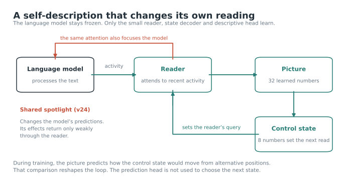

A self-description that changes how it reads itself
The loop learns a way of moving that depends on its own state. Its reading now affects the language model’s predictions. What the model does with that reading still scarcely returns to the loop.
Watch a recorded loop
Each dot is one of four parallel copies sharing the same learned interface, reading different texts. The trail shows its recent control states. This replays saved measurements; it does not generate a new trajectory.
Copy 1Copy 2Copy 3Copy 4
Loading the saved projection…
The strongest causal result is about a path: cutting the state’s influence on the reader largely removes its jumps. Cutting the model-attention path does not. Open “What the tests show” for the measured comparison.
What these positions mean
The plotted state is an 8-number control vector, not a place in a brain and not a map of experiences. One common principal-component projection is fitted across the three displayed recordings. It preserves only part of their geometry. The dimensions do not have word labels. These copies read different text streams; copies sharing one text can converge.
The description helps shape its own reader
A small learned reader attends to a frozen language model’s recent activity and forms a 32-number picture. A decoder turns that picture into the next control state. That state changes the query used by the reader at the next step.

Read the model’s activityThe current control state changes what the small reader attends to.
Form a pictureThe reading becomes 32 learned numbers. During learning, the picture describes possible movements.
Set the next readA decoder turns the picture into eight control numbers, closing the reader loop.
Share the spotlightThe same reading focuses the frozen model’s attention. Its response returns only weakly to the picture.
An earlier description game could be won by naming one destination: almost any starting state went to the same place. The newer game subtracts that destination. It asks the picture to distinguish how the next destination changes with the starting state.
Give the reading consequences
The reader’s attention also focuses the model’s own attention on the same recent positions. The model’s weights stay fixed. The loop’s picture, reader and decoder learn; the field-prediction head shapes them during training and is not consulted when choosing the next move.
The earlier frozen J-space and time-code systems remain separate experiments. The newest loop uses a learned picture; that picture is not itself a Jacobian-lens word mixture.
Affecting the model is not the same as closing through it
For the best developmental run, held-out interventions distinguish the path through the reader from the path through the language model’s own attention.
Large jumps after a path cut
The reading matters to prediction
11–16% of top next-token predictions change across the five self-describing runs trained with their own spotlight.
Next-token loss changes from −0.14% to +1.51%. The other-run-description control also changes predictions and slightly improves this loss. Effects on the model are not exclusive to self-description.
The model’s response barely comes back
The model-only route carries less than 1% of the full probe-dependent variation in these five runs.
In the best run, a stance intervention changes the native read-layer state by about 10%, the picture by about 0.1%, and the next control state by about 0.02%, relative to their respective baselines.
Final checkpoints · Qwen3-0.6B · matched held-out texts
Run
State dependence*
Pattern correlation
Top prediction changed
*Normalized squared variation of next destinations divided by displacement-field variation. This is not a probability, a fraction of steps, or a bounded variance decomposition. A positive pattern correlation does not establish a calibrated prediction: the field head’s unscaled squared errors remain large.
What remains unestablished
A reliable new regime across starts; stable personality differences; individuality among copies on a shared text; a representation of what the loop’s attention did to the model; useful online use of its predicted counterfactual field; and any relation to subjective experience. Two stable rich runs from the same start moved similarly, correcting an earlier claim about individuality.
Source measurements and reproduction
Playback: saved held-out state trajectories, tokens 200–999. Intervention bars: dev_s0_seed0_spot/self_formation.json. Tables: self_model_residual_3000.json and spotlight_check_3000.json for each named run. Full definitions, controls and limitations · Displayed data.
The change
A destination is a shortcut
When naming where the system goes is enough, a description need not say how the system depends on itself. Removing that shortcut changes what can develop. It works from organized starts; at birth there is almost no state-dependent signal to learn from.
The boundary
Control is not yet a model of control
The loop can change which tokens the model predicts while failing to represent what its own attending did. That distinction, tested by interventions, is the next design problem.